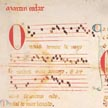
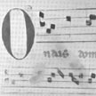

Grabación: lírica gallego-portuguesa
(Haz clic en el enlace para escuchar la grabación)
Martín Codax: "Ondas do mar de Vigo"
Si para la lírica provenzal disponemos de un buen repertorio de melodías, este no es el caso con la lírica gallego-portuguesa si exceptuamos las Cantigas de Santa María, que son una fuente maravillosa de música, toda ella transcrita con esmero. De la lírica gallego-portuguesa profana, en cambio, solo existe un grupo muy especial de poemas con melodías: las cantigas del poeta Martín Codax, halladas por casualidad a principios del siglo XX. El dueño de una copia medieval del De officiis de Cicerón se dio cuenta un día de que su copia estaba forrada con un pergamino (ing. parchment) que en el reverso tenía poemas y música. Resultaron ser las siete composiciones de Martín Codax, seis de ellas con melodía. La hoja que contiene las composiciones (técnicamente dos folios) se halla ahora en la Pierpont Morgan Library de Nueva York. Se puede ver claramente en la imagen a la derecha cómo el manuscrito original fue dañado cuando lo utilizaron para forrar la copia de Cicerón, dejando marcas en los dobleces. (Haz clic en las imágenes para verlas con más detalle; el otro lado del pergamino no tiene nada.) La partitura para estas melodías ofrece más información que la transcripción de la melodía para el poema de Jaufré Rudel: Ya a finales del siglo XIII se había empezado a desarrollar un sistema para indicar el valor rítmico de las notas. (En la grabación no se apreciará tanto ya que la cantiga se interpreta con un compás bastante lento.) Esta grabación incluye el acompañamiento de un salterio que se toca con un arco (ing. bowed psaltery); en la partitura original no hay ninguna indicación de acompañamiento instrumental y se trata de un adición de los intérpretes. |
 |
|  | |
{kind=link}
{kind=link}
(Grabación original: Waverly Consort, intérpretes. Spanish Music of Travel and Discovery. CD 2. Virgin Veritas, 2000.)